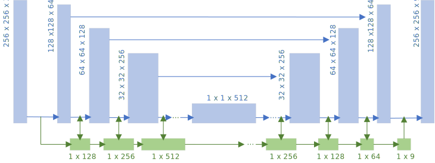
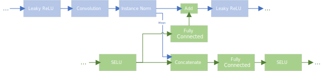
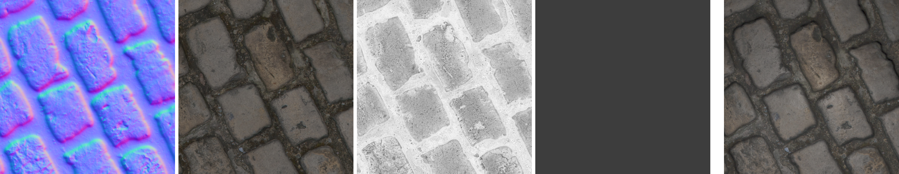
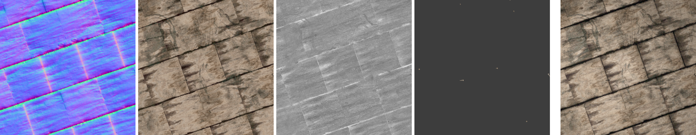
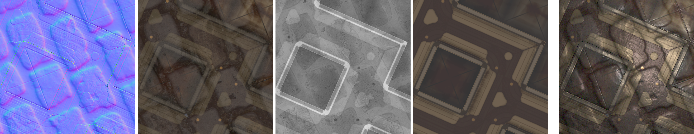
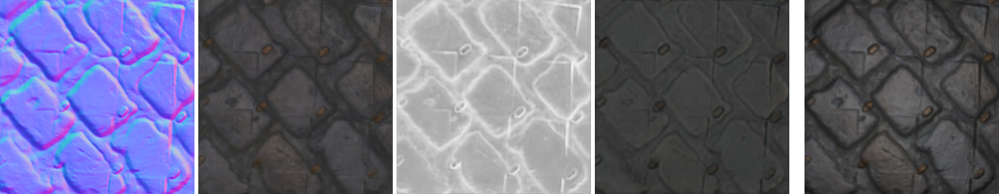
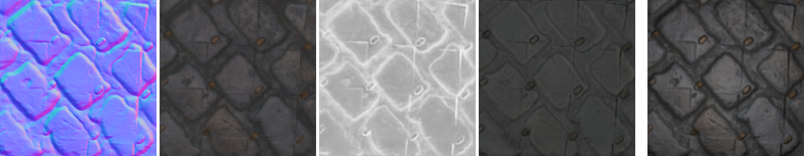

SVBRDF Estimation using a Physically-based Differentiable Renderer
Project by Markus Andreas Worchel (m.worchel@campus.tu-berlin.de)

Estimating scene parameters like geometry and material solely from images has been a widely researched topic, especially in the domain of computer vision. While there are well established methods for geometric reconstruction that are often able to leverage implicit knowledge about the camera setup, material reconstruction is a more ill-conditioned inverse problem. Recent advances in machine learning and computer graphics enable data driven approaches that use sophisticated light transport simulations for both, data generation as well as novel training objectives. So-called differentiable renderers allow using appearance-based objective functions for the training of neural networks by making the rendering operation differentiable with respect to arbitrary scene parameters. - Many methods use handcrafted renderers for the specific use case. - Scope of project: Integrate general renderer (pathtracer) into a pipeline for material reflectance estimation . - Teaser image from the follow-up work [TODO].
Motivation
Recent advances in computer graphics allow the simulation of virtual environments with quality closer to photo realism than ever before. This requires not only physically correct light transport simulations but also high quality assets that faithfully capture objects of the real world. Several industries including game development [TODO][TODO], movie production [NEEDCITATION] as well as projects concerned with cultural heritage [NEEDCITATION] rely on photogrammetry for asset acquisition. It allows reconstructing geometry and color information of real world objects only based on images, thus is a relatively light-weight capture process yielding high quality assets. While geometry reconstruction can be automated for the most parts due to the availability of robust algorithms, appearance-related material properties of the surfaces like their reflectance behavior often have to be manually defined by artists.
Such photogrammetry workflows would greatly benefit from methods that provide automatic deduction of these
appearant material properties, especially if they support a light-weight capture process without expensive
and difficult to deploy hardware. In this context, image-based approaches appear to be particularly interesting
as they could be easily integrated into existing workflows.
- Name research work focusing on material (reflectance) estimation
- Name the specific paper and problem
- Name the goal
Material Model
Figure 2

Visualization of the parameters of a SVBRDF. \(\mathbf{x}\) is a spatial position on the surface, \(\mathbf{\omega}_i\) the direction of irradiance and \(\mathbf{\omega}_o\) the direction of reflected radiance. \(\mathbf{n}\) is the local normal.
In computer graphics, surface reflectance properties are typically represented by a bidirectional reflectance distribution function (BRDF) \( f_r(\mathbf{\omega}_i, \mathbf{\omega}_o) \). It defines the fraction of (differential) irradiance coming from a direction \(\mathbf{\omega}_i\) that is reflected towards a direction \(\mathbf{\omega}_o\) [TODO]. As most surfaces are not fully homogeneous, the BRDF is usually given as a function of surface position \(f_r(\mathbf{x}, \mathbf{\omega}_i, \mathbf{\omega}_o)\), which is then also called spatially varying BRDF (SVBRDF). Figure 2 shows a visualization of the SVBRDF parameters. Note that the directional quantities in this function are relative to the local coordinate system that is defined by the surface normal \(\mathbf{n}\). Additionally, a physically correct BRDF fulfills two properties [TODO]:
- Helmholtz reciprocity: \(f_r(\mathbf{x}, \mathbf{\omega}_i, \mathbf{\omega}_o) = f_r(\mathbf{x}, \mathbf{\omega}_o, \mathbf{\omega}_i)\) for all \(\mathbf{\omega}_i, \mathbf{\omega}_o\)
- Energy Conservation: \(\int\limits_{\Omega} \, f_r(\mathbf{x}, \mathbf{\omega}_i, \mathbf{\omega}_o) \, \cos \theta_i \, d\mathbf{\omega}_i \leq 1, \) where \(\Omega\) is the hemisphere above \(\mathbf{x}\) and \(\theta_i\) the angle between \(\mathbf{\omega}_i\) and the surface normal \(\mathbf{n}\).
While it is possible to represent a BRDF as a set of samples over the full parameter space,
it is common to use simple and more intuitive models. The Cook-Torrance microfacet model [TODO]
is of particular interest for this project and will be the BRDF representation of choice.
In this model, the BRDF consists of two terms
\[ f_r(\mathbf{x}, \mathbf{\omega}_i, \mathbf{\omega}_o) = k_d f_d(\mathbf{x}) + k_s f_s(\mathbf{x}, \mathbf{\omega}_i, \mathbf{\omega}_o), \quad k_d + k_s = 1. \]
The diffuse component \(f_d\) is independent of the directions and captures effects
such as internal scattering or surface interreflections while
the specular component \(f_s\) captures explicit reflectance effects without surface penetration.
-- Surface consists of small differently oriented microfacets
-- Isotropic specular reflection -> only relative difference between \(\mathbf{\omega}_i\) and \(\mathbf{\omega}_o\) matter
- Four maps -> normal (in tangent space as variation from the macroscopic surface normal), diffuse albedo, roughness, specular albedo
(- Flat surface)
SVBRDF Estimation from Images
The main focus of this project is the work of Deschaintre et al. [TODO], a light-weight image-based method for capturing SVBRDFs of real world surfaces. Given a single flash-lit image of a flat surface, they are able to reconstruct its Cook Torrance SVBRDF maps using a deep convolutional network. Thus, they cast material reflectance estimation as an image-to-image translation problem. Their follow-up work [TODO] extends the idea by using multiple uncalibrated but aligned images of the same surface. While we initially planned to base the whole project on the multi-view approach, time constraints and lower overall complexity lead us to focus only on the single-view case. However, some ideas and the implementation reference are mainly borrowed from the multi-view approach.
Architecture
At the heart of the presented approach is a deep convolutional network that adopts the U-Net architecture [NEEDCITATION] which has shown to be suitable for other image-to-image translation problems. The input to the network is a conventional three channel RGB image of the surface and the output is a nine channel image, where two channels represent the per-pixel normal (the z coordinate is inferred from the x and y coordinates), three channels represent the diffuse albedo, one channel represents the roughness and the last three channels represent the specular albedo. As this reflectance representation is conformant to the Cook Torrance model (see section Material Model), the approach intrinsically assumes that the surface can be represented by it.
Figure 3
TODO: Description (size of the blocks is not to scale).
The used U-Net architecture implements an encoder-decoder structure resembling the well-known hourglass shape. A coarse overview of the network is shown in Figure 3. The encoder part consists of eight convolutional layers with feature counts 64, 128, 256, 512, 512, 512, 512, 512 that gradually reduce the spatial size of the image (using a stride of two) while increasing the number of features. The bottleneck is followed by a decoder part which again consists of eight layers that perform spatial upsampling followed by two convolutions. The decoding layers have similar feature counts as the encoding layers, only in reversed order with the last decoding layer having a feature count of nine to match the output format. In order to better reconstruct fine details that possibly have been lost in the bottleneck, each decoding layer is connected to the output of the same sized encoding layer through a skip connection. Leaky ReLUs with a negative slope of 0.2 serve as activation functions in these layers. The full-sized 9 channel decoder output is passed through a final tanh activation. The result is transformed into a valid SVBRDF by computing the z coordinates of normals from the given x and y coordinates as well as by bringing the diffuse albedo, specular albedo and roughness to the range [0, 1].
In order to stabilize training, the network performs instance normalization between each convolutional layer and its preceeding activation function. However, the authors found that this normalization reduces the network's ability to maintain non-local information effectively. They showed that even a simple task such as predicting a constant colored diffuse albedo can impose a significant challenge on such an architecture. Their proposed solution is a second network parallel to the main encoder-decoder track that explicitly propagates global information. Figure 4 shows a detailed visualization of the information exchange between the main track (in the encoding part) and the global track. The per-channel means that are subtracted by the instance normalization flow into the global track. They are concatenated with the previous feature vector, transformed by a fully connected layer and then pass through a SELU activation function. In the other direction, the previous feature vector is transformed by another fully connected layer and then added to the output feature maps of the instance normalization. Using this second track, the network is able to propagate non-local information as part of a global feature vector.
Figure 4
TODO: Description.
Note that specific details about the architecture of the single-view network are mainly extracted from the publicly available code of the multi-view approach. The single-view model (or at least a variation of it called 'Generator') is a subset of the multi-view model. There might be subtle differences between the model used in the single-view work and the single-view model presented here.
Data
Similar to other learning-based approaches, data is an integral part of this one aswell. In order to train the network presented in the previous section, several sample pairs of inputs and outputs, i.e., flash-lit images of the surface and their respective SVBRDF maps, are required. Since the latter is difficult to obtain for real world surfaces in the necessary quantity, the authors chose to use artificial training data that is representative for a large variety of real materials. More specifically, they obtained a set of 1850 samples (SVBRDF maps) by selecting 155 materials from Allegorithmic Substance Share [NEEDCITATION] (a dataset of artist-generated procedural materials) and permutating their important procedural parameters. However, in practice we found that their publicly available dataset does not contain 1850 but only 1628 samples: 1590 for training and 38 for testing.
Given an artificial material sample, the corresponding input image is generated by rendering a material patch placed in a virtual scene that contains one light source. The camera and light positions above the patch are randomly varied between samples to capture different alignments of camera lense and flash position as well as camera field of views. Additionally, variations of white balance, flash intensity and flash colors are simulated. The final image is then post-processed by adding Gaussian noise, clipping radiance and gamma encoding in an attempt to mimic common image degradations. Figure 5 shows three material samples and their corresponding rendered input images.
Figure 5
 
TODO: Description.
Since the amount of materials obtained this way is still too low, the authors propose to increase the variety by mixing randomly selected pairs of materials. Specifically, they combine different SVBRDF maps using alpha blending with a randomly chosen alpha value. The result of such a mixing operation can be seen in Figure 6. While they argue that the results stay close to real-world materials, it can be seen that the blend of certain material classes (e.g. stone and metal) does not produce physically plausible results. We still adopt this technique in order to increase the variety of unique samples and shading effects in the dataset.
Figure 6
TODO: Description.
The single-view work uses the above mentioned techniques to generate a fixed dataset offline, i.e., all material variations are precomputed and saved together with their renderings as individual files. The dataset contains roughly 200000 samples having a size of over 80 GB. The multi-view work pursues a lazy generation approach, where they generate material variations and input renderings at load time. This results in a significantly reduced dataset size of roughly 1 GB, as only the different base material samples have to be provided. As it is a clear improvement over the offline method, we also use the latter approach.
Training Objective
One important ingredient for training the network is the choice of training objective, i.e., the loss function. In the concret scenario, the loss function has to compare SVBRDF maps predicted by the network to the ground truth maps belonging to the input image. The obvious and most intuitive choice would be simple losses like \(l_1\) or \(l_2\) which compare the SVBRDF maps pixel-wise like multi-channel images. However, as the authors note, the current parametrization of the SVBRDF as Cook-Torrance maps is rather arbitrary and the magnitude of numerical differences between two parametrizations is only a weak indicator for their visual difference. They instead propose a loss function, that compares the appearance of two SVBRDFs, independent of their specific parametrization. This rendering loss renders both the ground truth SVBRDF as well as the estimated SVBRDF as flat material patches under varying viewing and lighting conditions and only compares the rendered images pixel-wise. Figure 7 shows the difference between using only a simple \(l_1\) loss and the rendering loss.
Faithfully comparing two SVBRDFs at each step would require rendering under a large amount of fixed light and camera positions to cover all possible angles. Instead, they chose a stochastic approach where only a semi-randomly sampled subset of nine configurations is evaluated at each step. In the first three configurations, the light and camera position are independently sampled from a cosine distribution over the upper hemisphere. The remaining six configurations are intended to explicitly cover specular configurations, that appear less often when performing independent sampling but potentially carry rich information about the material in their specular highlights. These configurations are obtained by only randomly sampling the view position and then using the mirrored vector as light position. By introducing a random shift and distance offsets, specular highlights of various sizes and positions on the material patch can be generated.

 

While the single-view work only relies on the rendering loss, the multi-view work complements the loss function by individual \(l_1\) losses between parts of the SVBRDF maps. The mixed loss is defined as \[L \triangleq L_\text{R} + 0.1 (L_\text{Normal} + L_\text{Diffuse} + L_\text{Roughness} + L_\text{Specular})\] where \(L_\text{R}\) is the rendering loss and \(L_\text{Normal}\), \(L_\text{Diffuse}\), \(L_\text{Roughness}\) and \(L_\text{Specular}\) are \(l_1\) losses between the normal maps, diffuse albedo maps, roughness maps and specular albedo maps, respectively. We also chose to adapt this mixed loss formulation for our loss function as the authors report this small supervision to stabilize the training.
Figure 8
TODO: Description.
- Explain renderer (patch sampling)
Figure 9

TODO: Description.
Our rendering differs from the original work as follows. First, we do not simulate the flash as spot light with angular fall-off, but rather use a simple point light with radial fall-off. This was done for simplicity in our implementation but also for compatibility with the renderer to be integrated. It does not directly pose a problem to the rendering loss but rather affects the input image generation as it is meant to produce artificial flash-lit images. Therefore, the network might perform worse than expected when fed with real captured images. Second, we don't use ambient lighting, so the scene is only illuminated by one light source. While we initially assumed that it would not be very beneficial to use ambient lighting, we saw certain problems when rendering metallic materials without it. As reflection on metals is dominated by the specular component, only specular highlights are really visible, leaving the rest of the material patch unlighted (see Figure 9). Thus, some structural information is lost when generating the input renderings or comparing the appearance. Similar to the first difference, this might affect the results for real images negatively as in real scenes there usually is some form of environment lighting (other light sources or indirect illumination).
Implementation
While there is a publicly available implementation of the multi-view work, there is none of the single-view one, unfortunately. This as well as the better flexibility of a custom implementation and for the sake of gaining practical experience in the project, motivated us to reimplement the presented method. As mentioned earlier, the implementation does not strictly follow the single-view work, but can be thought of as a crossover between both methods, as it adopts aspects of either one. Since the backend of potential renderers to integrate was known beforehand, the reimplementation is based on PyTorch as opposed to the original work which uses TensorFlow.
The single-view convolutional network is implemented by the class
SingleViewModel which operates on batches of input images
returning batches of predicted SVBRDFs. Although we never used the multi-view
network other than for small tests, we still implemented it in a similar class MultiViewModel.
The core of both networks is the Generator which encapsulates
the encoder-decoder architecture together with the global track.
Its building blocks are meant to cleanly encapsulate the interaction
happening in both the main and global track but also the interaction
between the tracks:
EncodingLayer- Convolution (downsampling) of the 2d feature map and integration of the global feature vector through a
MergeLayer. - Outputs the new 2d feature map and the mean before normalization.
- Convolution (downsampling) of the 2d feature map and integration of the global feature vector through a
DecodingLayer- Deconvolution (upsampling) of the 2d feature map and integration of the global feature vector through a
MergeLayer. - Outputs the new 2d feature map and the mean before normalization.
- Deconvolution (upsampling) of the 2d feature map and integration of the global feature vector through a
GlobalTrackLayer- Integration of the previous global feature vector and the current per-channel mean.
Video Title
Video description
Video Title
Video description